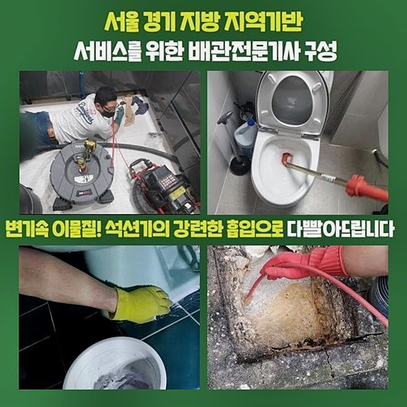
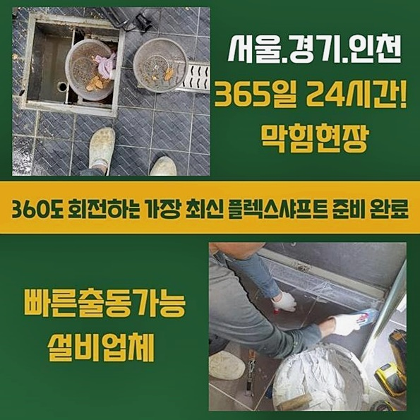
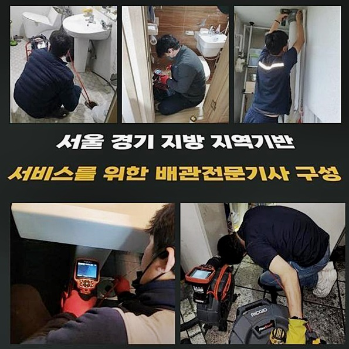
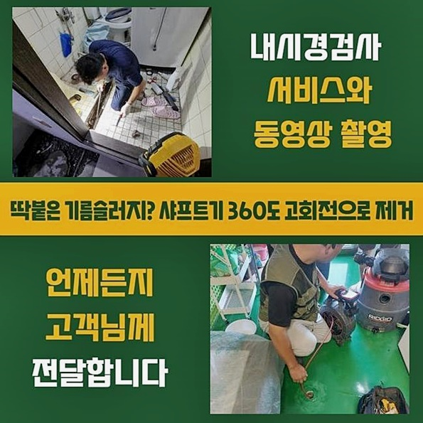
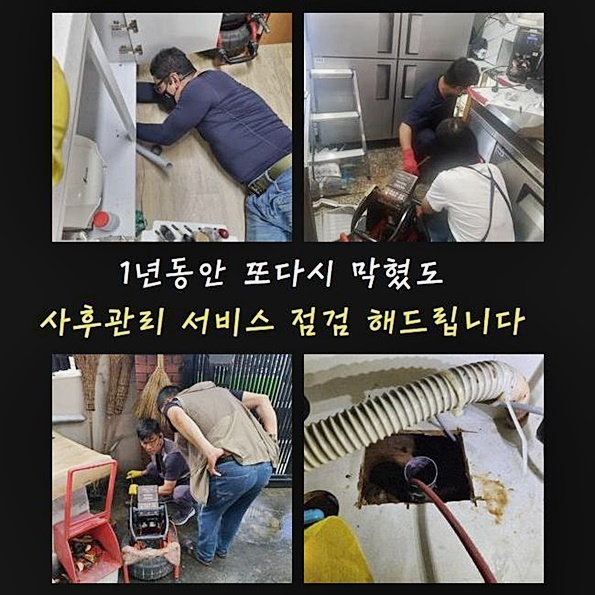

🏠 의정부 신곡동욕실역류 자일동 횡주관청소 배관공사
용인 싱크대막힘 전문 시공 후기

📋 작업 개요
- 위치: 용인
- 서비스 유형: 싱크대막힘, 하수구막힘, 배관막힘, 역류해결, 뚫는업체, 배관청소, 설비공사, 배관보수, 악취차단
- 작업 일시: 2024. 8. 4. 21:25
- 업체명: 하수구수사대 (010-5615-2118)
🔍 문제 상황
의정부 신곡동욕실역류 자일동 횡주관청소 배관공사
하수구 고장으로 곤란하실 때 얼른 달려가서 고착화된 하수와 막연한 마음까지 달래드리는 전문적 조치를 보여드릴게요
정상적인 생활하수가 정상적으로 내보내지던 하수 시스템이 어느순간 느릿느릿해지다 아예 막혀서 다양한 술수를 써서 물길을 내보려고 했으나 크게 달라지는 바가 없었나요?
그렇다면 걱정마시고 설비에 능통한 전문인력인 저희에게 와달라 부탁하시면 아무 걱정없으시게 맞춤 작업을 시행해 드리니 언제라도 전화주시면 됩니다
하수구중단의 사유는 오염원이 자리했을 상황이 대다수입니다
만약에 내부에 이물질들이 딱히 채워지기 이전인 초기 레벨이면 가볍게 구할 수 있는 락스같은 화학연화제라거나 뚫어뻥같은 도구 같은 셀프 용법만으로도 막힌 게 소거될 수 있습니다
반면에 더러운 찌꺼기들이 대량 누적된 상태거나 심지어 말라붙어 상당한 크기로 확장된 경우일 때는 전문지식이 없다면 그리 성공확률이 높진 않아요
심상치않은 막힘이라고 판단될 시 전문적인 도움을 받아서 보수하는 것이 중요한데요
한 아파트에 살고 계시는 고객님께서 아무 문제없던 주방 싱크대 물이 안 빠져서 빠르게 와주면 좋겠다는 연락을 받고 작업지로 얼른 찾아가게 됐어요!
하수구가 막혀버렸다면 반복적인 막힘이 찾아올 것도 대비를 해줘야 합니다
이상물질이 빠져나가지 못하여 막혀버린 경우 시원하게 정돈을 거쳐주지 않으면 남은 이물질끼리 뭉쳐서 다시 하수관을 막게 되는 겁니다
아파트 시설 내에서 일어나는 하수관 작업의 경우에는 고난도 작업은 적은 편이므로 과하게 걱정하진 않았어요
저희는 매일 똑같이 의외로 난관이 나타날 수 있으므로 누락없이 만반의 준비를 해요

🔎 원인 분석
💡 전문가 진단: 정밀 진단 장비를 사용하여 슬러지의 고착 여부를 판명하고 타격/세척 작업을 실시했습니다.
원활한 하수구작업을 이어가려면 고성능의 석션기와 촬영기기 샤프트와 같은 여러 장치들이 가동되어야 합니다
뛰어난 효능을 자랑하는 장치들을 두루 장착하고 현장 방문을 드리는 것은 기본입니다
석션은 진공청소기와 유사한 기전인데 다른 점은 습기까지도 처리가 되는 점이 특수합니다
간혹 초기 단계라면 석션기를 가동시켜서 빨아 당겨주기만 하면 차단된 길이 열리게 되는 케이스도 있긴 해요
간략하게 해결되는 이런 경우들은 예외적인 경우에 속하고 훨씬 더 집적량이 많은 때가 확률적으로 유력합니다
석션을 돌리면 이물질의 흡수는 당연하고 내부에 고인 물들까지도 남김 없이 끌어올릴 수 있는데 뿌연 고인 물을 없애줘야 배관용 촬영장치를 유입시켜 관측할 수 있어요
문제가 일어난 부분을 안내받아서 장치와 함께 자리를 잡고 문제점을 매의 눈으로 관찰해 봅니다
아주 단단하게 막혀 있었지만 이러한 문제로 인해서 주름관의 틈새에서 역행하는 일이 생겼나 보더라고요
적당한 생활용수만 폐기하면 느릿느릿하게 빠져나가긴 하지만 한번에 물바구니를 통째로 부었을 때 역류현상이 관측된다면 통로가 많이 좁고 이물질이 다량 머무른다는 뜻입니다
관에 말라붙은 찌꺼기가 물이 빠져나갈 길을 못 찾아서 거꾸로 올라오는 거예요
첫 순위로 석션작업을 돌려 보았는데 고형화된 물질은 없었고 혼탁한 수분만 탈출했어요
역행은 쭉 이어지는 수준인데다 차오른 물 역시 내려가지 못하는 모습이었죠
그래도 하수를 빼주었으니 이곳에 트러블을 만든 주범인 사유를 검사하기 위해서 환한 라이트가 달린 내시경기를 파이프라인 속으로 배치했습니다

🔧 작업 과정
노즐을 넣어준 지 오래되지 않았는데도 손쉽게 문제점을 파악하게 됐는데요
잔뜩 뭉친 슬러지가 사이즈가 막대한 수준이라 통로가 한치도 확보되지 않았습니다
이처럼 장기간 막혀온 배관이었기에 아무래도 물이 유연하게 흘러갈리가 전혀 없는 컨디션이었죠
물이 다시 제대로 배출되게 하려면 적절한 청소가 이뤄져야 했죠
장기간 머무르다가 응집력이 좋아진 질벅질벅한 기름찌꺼기라면 결합을 와해시킨 다음에야 소거를 시키기 때문에 강한 힘으로 스케일링해주는 샤프트로 떡하니 자리를 차지하는 슬러지를 잘게 나눠주는데 집중했어요
샤프트 기기의 헤드에 달려있던 쇠사슬이 빠르게 돌면서 잘게 잘려질 수 있도록 파쇄하는 업무를 해야 합니다
이러한 파쇄업무 도중엔 카메라로 확인을 해가며 진행하고 있으니 배관이 부서질 일은 없어요
입문한지 얼마 안 된 사람이 아닌 전문가가 상황에 맞게 단계별로 작업을 하기에 안심하고 지켜봐 주세요
많은 오류를 개선시켜왔고 대응 매뉴얼이 충분하니 제아무리 어려운 수준이 높을지라도 문제 없이 솔루션을 적용해 드리죠
현장의 조건들을 다 따져보고 가장 합리적인 방법을 고르고 완전한 청결도를 확보할 수 있도록 집중을 하고 있습니다
작업 도중과 끝에도 카메라로 대상지인 파이프 내부가 다친 곳은 없는지 쭉 지켜보게 됩니다
잘게 잘라주는 역할인 샤프트로 할 일이 끝나면 조각을 빨아내주는 석션기로 작게 조각화된 대상물을 원활하게 소거해 줍니다
다음 단계로 넘어가려고 샤프트를 다시 끌어올려 빼올리니 끝부분과 호스에 냄새나는 이물질이 가득 달라붙어 있었네요
흐름이 끊기지 않게 슬러지들을 잘게 나눠주고 소거시키는 업무를 지치지 않고 꾸준하게 임하다 보면 지독한 슬러지로 인한 막힘은 자연스럽게 해결됩니다
이러한 기름이 부패한 채로 자리해 왔기때문에 썩은내도 심각하게 유발됐어요
속에 있는 오염물들을 모조리 없애주고 나면 악취에 대한 고민도 자연스럽게 해결됩니다
혹시라도 미량의 입자라도 여전히 머물러있지 않게 내부가 쾌적할 정도로 배관 환경을 정비해 드립니다
상당수의 기름 찌꺼기가 나온 이후라서 이전에 청소를 해주기 전과 비교하면 판이하게 달라졌어요
이제는 막혀있는 측면들을 처리하여 통로를 재확보했으니 남은건 일부 제거되지 않은 찌꺼기를 마저 흡수를 시켜줘서 맑고 쾌적하게 조성해 줍니다
배관카메라로 다시 내부 구멍 속을 탐방해 보니 갑갑하기만 했던 문제성 관로가 새것처럼 멀끔해진 변화를 직접 눈으로 보게 됐네요
고객님 역시 나아진 모니터링도 하고 설명을 들으시곤 안도의 한숨을 내쉬시더라고요


✅ 작업 완료
막힘이 최대한 되풀이되지 않게 지속적으로 20분 가량 청결관리를 해드린 결과 파이프라인의 곳곳은 시야가 훤히 트일 만큼 깔끔 그 자체로 바뀌었네요!
싱크대 수도를 틀어서 물을 틀어서 잘 내려가는지 체크를 걸어주게 되었는데 빠릿빠릿한 모습으로 잘 빠져나가는 것이 보였네요!
소량만 내려보내지 않고 한방에 버릴 때도 트러블이 없는지 테스트를 역시나 거쳐주었습니다
묵직한 수준으로 물을 폐수했음에도 불구하고 전혀 역류 관련한 증상 없이 말끔히 처리가 되더라고요
필요에 의해 활용한 기계를 정비해 두고 이물질이 남아있을 주변까지 깨끗하게 치워드리고 철수를 하게 됐네요
하수구의 막힘으로 인하여 뚫어낼 뾰족한 수가 없다면 편안하게 연락만 취하신다면 작업장으로 빠르게 이동하여 막힘 없는 작업 능력을 기반으로 책임지고 도맡겠습니다



⚠️ 주방 싱크대 배관 막힘 예방 수칙
- ✅ 기름기가 묻은 식기나 프라이팬은 설거지 전 키친타올로 반드시 기름때를 닦아내세요.
- ✅ 주기적으로 싱크대 개수대에 뜨거운 물을 가득 받아 한 번에 내려 배관 내부 기름을 씻어내세요.
- ✅ 배수구 거름망을 미세한 필터로 사용하시고 음식물 찌꺼기가 틈으로 새어 들지 않게 관리하세요.
- ✅ 베이킹소다와 식초를 뜨거운 물과 함께 일주일에 한 번씩 부어주면 배관 살균과 막힘 예방에 좋습니다.
💡 핵심 정리
- 확실한 장비 작업(내시경 점검 및 샤프트 스케일링)으로 원인을 뿌리 뽑습니다.
- 작업 후 1년 이내에 동일한 부위 재발 시 100% 무상 A/S 서비스를 보장합니다.
- 서울 · 경기 · 인천 전 지역에 24시간 언제든 긴급 출동할 수 있도록 항시 대기 중입니다.
❓ 자주 묻는 질문 (FAQ)
🚨 용인 싱크대막힘 문제로 고민이신가요?
정확한 원인 진단과 확실한 시공으로 재발 없는 해결을 약속드립니다.
24시간 긴급 출동 | 서울 · 경기 · 인천 전지역 | 1년 내 재발 시 무상 A/S